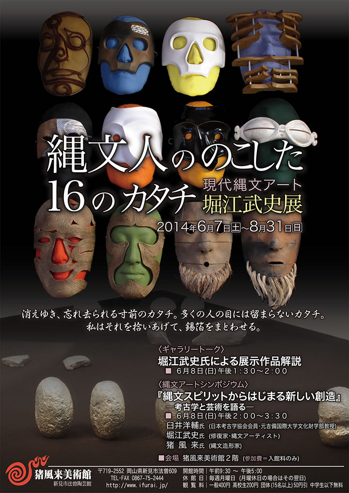
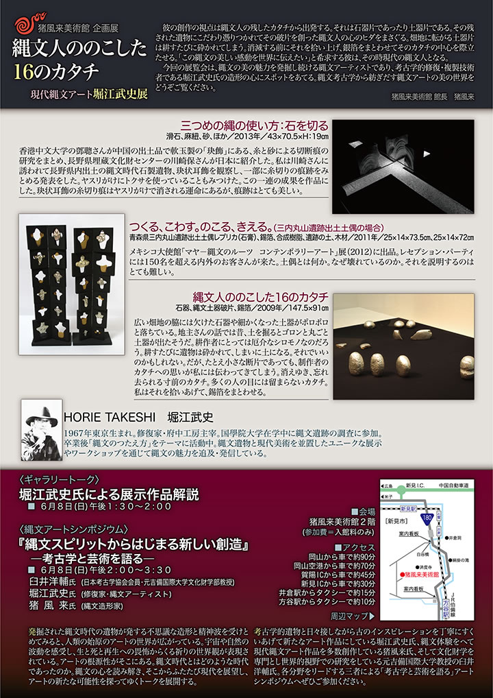

|  |
|  |
| 【縄文人の残した１６のカタチ 堀江武史展チラシ】 →（表面）PDF版を開く →（裏面）PDF版を開く |
彼の創作の視点は縄文人の残したカタチから出発する。
それは石器片であったり土器片である。
その残された遺物にこだわり憑りつかれてその破片を創った縄文人の心のヒダをまさぐる。
畑地に転がる土器片は耕すたびに砕かれてしまう。
消滅する前にそれを拾い上げ、銀箔をまとわせてそのカタチの中心を際立たせる。
「この縄文の美しい感動を世界に伝えたい」と希求する彼は、その時現代の縄文人となる。
今回の展覧会は、縄文の美の魅力を発掘し続ける縄文アーティストであり、考古学的修復・複製技術者
である堀江武史氏の造形の心にスポットをあてる。
縄文考古学から紡ぎだす縄文アートの美の世界をどうぞご覧ください。
=∴=∵=∴=∵=∴=∵=∴=∵=∴=∵=∴=∵=∴=∵=∴=∵=∴=∵=∴=∵=∴=∵=∴=∵=∴=∵=∴=
HORIE TAKESHI 堀江武史
1967年東京生まれ。
修復家・府中工房主宰。国學院大学在学中に縄文遺跡の調査に参加。
卒業後「縄文のつたえ方」をテーマに活動中。
縄文遺物と現代美術を並置したユニークな展示やワークショップを通じて縄文の魅力を追及・発信している。
〈ギャラリートーク〉
堀江武史氏による展示作品解説
■ ６月８日(日) 午後１:３０～２:００
=∴=∵=∴=∵=∴=∵=∴=∵=∴=∵=∴=∵=∴=∵=∴=∵=∴=∵=∴=∵=∴=∵=∴=∵=∴=∵=∴=
〈縄文アートシンポジウム〉
『縄文スピリットからはじまる新しい創造』
―考古学と芸術を語る―
■ ６月８日(日) 午後２:００～３:３０
■ 会場 猪風来美術館２階(参加費＝入館料のみ)
臼井洋輔氏 (日本考古学協会会員･元吉備国際大学文化財学部教授)
堀江武史氏 (修復家･縄文アーティスト)
猪風来氏 (縄文造形家)
発掘された縄文時代の遺物が発する不思議な造形と精神波を受けとめてみると、人類の始原のアートの世界
が広がっている。
宇宙や自然の波動を感受し、生と死と再生への畏怖からくる祈りの世界観が表現されている。
アートの根源性がそこにある。
縄文時代とはどのような時代であったのか。
縄文の心を読み解き、そこからふたたび現代を展望し、アートの新たな可能性を探ってゆくトークを展開する。
考古学的遺物と日々接しながら古のインスピレーションを丁寧にすくいあげて新たなアート作品にしている
堀江武史氏、縄文体験をへて現代縄文アート作品を多数創作している猪風来氏、そして文化財学を専門とし
世界的視野での研究をしている元吉備国際大学教授の臼井洋輔氏。
各分野をリードする三者による「考古学と芸術を語る」アートシンポジウムです。